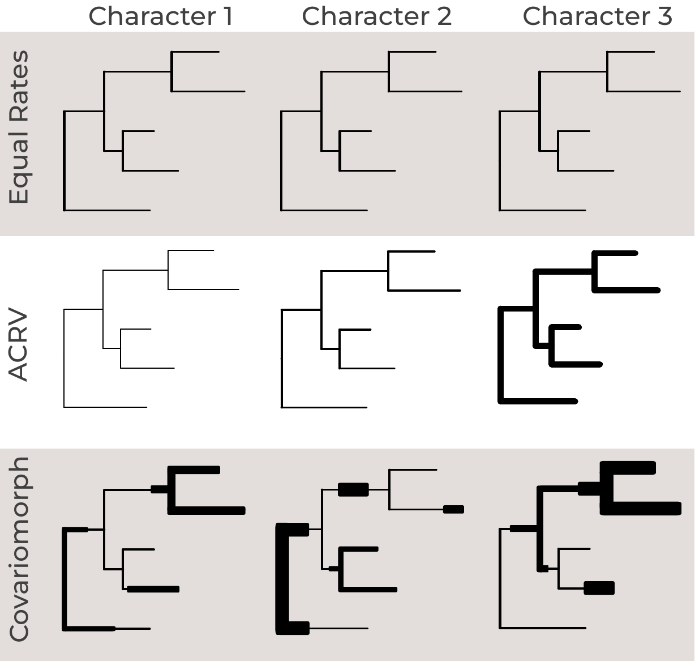
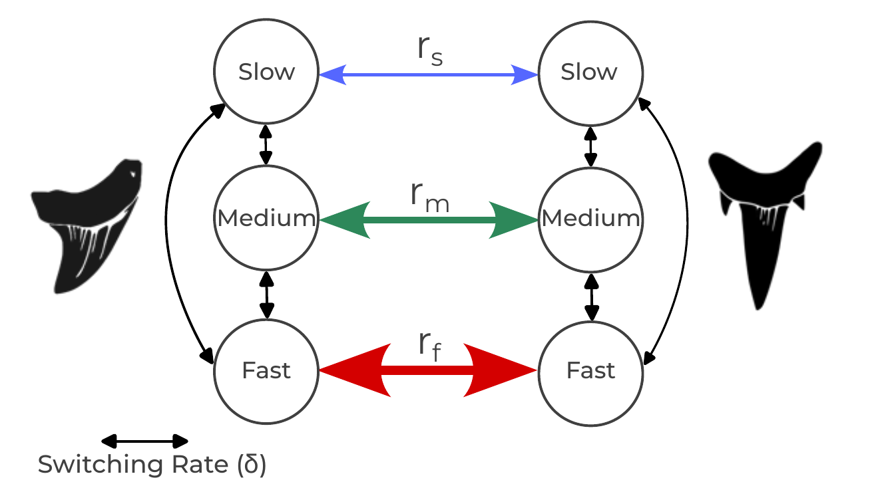
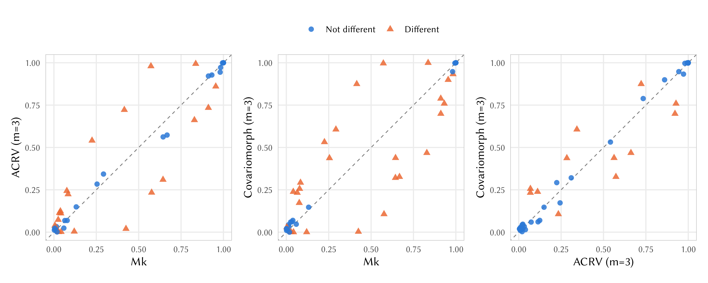

Discrete morphology - Among-character rate variation let each character have its own, fixed rate of evolution, drawn once from a Gamma (or lognormal) distribution and never changing thereafter. That is already an improvement on the plain Mk model, but it still assumes that a character’s rate is constant over the entire tree: a character that evolves quickly does so on every branch, forever.
Real characters are not always so well-behaved. A structure can be under strong selective constraint in one part of a tree and released from that constraint elsewhere – for example, a structure that is functionally important in one lineage but vestigial in another may evolve slowly in the first and quickly in the second. The same character can also become “locked” for long stretches of time (because a developmental or functional dependency makes any change deleterious) and later become free to vary again. When the rate of a character changes across the tree in this way, we speak of heterotachy (literally, “different speeds”). contrasts this with the models of the previous tutorials.

Because the underlying cause of such a rate shift (a change in function, in developmental context, or in selective regime) is usually not itself observable, we model it as a hidden process: a character’s rate of evolution is allowed to switch between a small number of hidden rate categories as it evolves along the tree, and we never get to see which category was in effect at any point in time – only the resulting character states at the tips. This is the covarion model. The idea goes back to Fitch and Markowitz (1970), who noticed that only a subset of codons in a gene appeared free to vary at any one time (“concomitantly variable codons”, hence covarion), and that this subset itself changed over time. Tuffley and Steel (1998) turned this idea into a formal continuous-time Markov model of sequence evolution. Hidden rate classes have also been used for single morphological characters, e.g., in Beaulieu et al. (2013)’s study of plant growth-form transitions. Khakurel and Höhna (2026) extended the covarion model to phylogenetic inference from whole matrices of discrete morphological characters, under the name covariomorph model; this tutorial follows their implementation in RevBayes.
It helps to start by being precise about how this differs from the ACRV model of Discrete morphology - Among-character rate variation:
In other words, ACRV models variation in rate among characters, while the covarion model additionally models variation in rate within a character, over time. As we will see below, ACRV is in fact a special case of the covarion model.
Consider a character with $k$ observable states (for a binary character,
$k=2$: states 0 and 1), and suppose there are $m$ hidden rate categories
(called NUM_CATEGORIES in our scripts) with rate multipliers
$r_1, r_2, \ldots, r_m$. Under the covariomorph model, at any moment in
time the character is in a compound state $(x, c)$, made up of
The compound process therefore has $k \times m$ states. Over a short interval of time, exactly one of two kinds of event can happen:
Changing the observed state and the rate category in the same instant is not allowed (it has rate zero), just as two nucleotides changing simultaneously is not allowed in a standard substitution model.

If we order the $k \times m$ compound states in blocks – first all $k$ observed states in category 1, then all $k$ observed states in category 2, and so on – the two kinds of events above give the rate matrix a simple block structure. The blocks on the diagonal describe state changes within a category, and the off-diagonal blocks describe category switches, which are diagonal matrices (scaled identity matrices $I$) because a switch never changes the observed state:
\[Q = \left( \begin{array}{c|c|c|c} r_1 Q^{(1)} & s_{12} I & \cdots & s_{1m} I \\ \hline s_{21} I & r_2 Q^{(2)} & \cdots & s_{2m} I \\ \hline \vdots & \vdots & \ddots & \vdots \\ \hline s_{m1} I & s_{m2} I & \cdots & r_m Q^{(m)} \\ \end{array} \right)\](the diagonal elements of the full matrix are, as always, set so that each row sums to zero).
To make this concrete, take a binary character ($k=2$) with $m=2$ hidden rate categories, a “slow” category with rate $r_1$ and a “fast” category with rate $r_2$, Jukes-Cantor-type state changes within each category, and switching rates $s_{12}$ (slow to fast) and $s_{21}$ (fast to slow). Writing the four compound states as $(0,\text{slow})$, $(1,\text{slow})$, $(0,\text{fast})$, $(1,\text{fast})$, the full rate matrix is
\[Q = \left( \begin{array}{cc|cc} -(r_1 + s_{12}) & r_1 & s_{12} & 0 \\ r_1 & -(r_1 + s_{12}) & 0 & s_{12} \\ \hline s_{21} & 0 & -(r_2 + s_{21}) & r_2 \\ 0 & s_{21} & r_2 & -(r_2 + s_{21}) \\ \end{array} \right)\]Notice the zeros: a character cannot go directly from $(0,\text{slow})$ to $(1,\text{fast})$; it must first change its state and then switch category (or vice versa), as two separate events. (In the model we use below, the two switching rates are equal, $s_{12} = s_{21}$; see .)
The covariomorph model as we implement it here has two kinds of free parameters beyond the tree and its branch lengths.
The rate multipliers $r_1, \ldots, r_m$. Exactly as in the ACRV
model of Discrete morphology - Among-character rate variation, we do not estimate each $r_c$
separately. Instead, we obtain them by discretizing a continuous
distribution into $m$ equal-probability categories and taking a
representative value from each. Here we use a lognormal distribution
with a median of 1 whose standard deviation $\sigma$ (on the log scale,
called sd_morpho in our scripts) controls how different the categories
are from each other: a small $\sigma$ gives categories with nearly
identical rates, while a large $\sigma$ gives a mixture of
nearly-invariable and very fast categories. The discretized values are
then rescaled to have a mean of exactly 1, so that, on average, branch
lengths keep their usual interpretation as the expected number of
character changes per character.
The switching rates $s_{cd}$. These govern how often a character
changes its rate category. We assume that a character is equally likely
to switch from its current category to any of the other $m-1$
categories, and parameterize all switching rates by a single parameter,
the switching rate $\delta$ (called global_switch_rate in our
scripts): the total rate of leaving the current category. Each
individual switching rate is then
Because $\delta$ is the total rate of leaving a category, its meaning does not depend on $m$: along a branch of length $v$, a character is expected to switch rate category about $\delta v$ times. For example, a switching rate of $\delta = 1$ means that a character switches category about as often as it changes state in a category with average rate. This lets us keep the same prior on $\delta$ if we later change the number of categories.
Because the switching rates are symmetric, the hidden process spends, in the long run, an equal amount of time in each category. That is, the stationary probability of each category is $1/m$, which is also the probability with which we assume each character starts in each category at the root of the tree – exactly the equal-probability categories of the ACRV model.
It is useful to think about what happens at the two extremes of the switching rate, because they connect the covariomorph model to the models you already know:
The interesting, covarion-like behavior lies between these extremes: switching that is slow enough that a character stays in one category for a meaningful stretch of the tree, but fast enough that it does switch at least occasionally across the tree. Estimating $\delta$ alongside the tree tells us where in this range our data fall. This is also why a covariomorph analysis needs enough data to be informative: the signal for switching comes from characters that appear conserved in one part of the tree but labile in another.
Because the Mk and ACRV models are both nested within the covariomorph model, we do not need to decide in advance whether our data contain covarion-like signal. If they do not, the covariomorph model simply reduces to one of the simpler models: to ACRV if characters differ in rate but do not switch, and to Mk if they do not differ in rate at all. As we will see in and , the priors we use are chosen so that the model leans towards the Mk model unless the data clearly support rate variation and rate switching.
Because the hidden rate category is never observed, we cannot simply plug the scored states into the expanded $(km) \times (km)$ rate matrix. Instead, RevBayes expands each observed state into all of the compound states that are compatible with it. A tip scored as state 1, for example, could be in $(1, c)$ for any category $c$, so its tip likelihood vector has a 1 in each of those $m$ positions and a 0 everywhere else – in exactly the same way that an ambiguous or missing score is handled in a standard analysis. The usual pruning algorithm, run on the expanded $k \times m$ state space, then automatically sums (“marginalizes”) over every possible hidden-category history at every internal node and along every branch (Tuffley and Steel 1998).
This has a computational cost. Each transition-probability calculation now involves a $(km) \times (km)$ matrix instead of a $k \times k$ one, so a covariomorph analysis with $m = 3$ categories is considerably slower than the equivalent Mk or ACRV analysis. Keep $m$ small (3 or 4 is a common choice) unless you have a good reason to do otherwise.
Download the data file
snakes.nexand save it to yourdatadirectory.
snakes.nex contains 234 morphological characters scored for 21 taxa
(Scanlon and Lee 2000). The matrix was assembled to place the giant
Pleistocene Australian snake Wonambi (Madtsoiidae) and to study the
early evolution of snakes. It contains 17 extant snake lineages, three
fossil taxa (Pachyophiidae, Madtsoiidae and Dinilysia), and a
hypothetical outgroup called Ancestor, which the original authors used
to root the tree. Of the characters, 156 are binary, 70 have three
states and 8 have four states, so – exactly as in
Discrete morphology - Multistate characters – we partition the matrix by the
number of states. All characters are treated as unordered: the
covariomorph model uses an unordered (Mk-type) rate matrix within each
rate category.
Create the Rev-script files model_Covariomorph_partition.Rev and mcmc_covariomorph.Rev in your
scriptsdirectory.
We continue to reuse the shared tree model, model_tree.Rev, from
Discrete morphology - The Mk model. model_Covariomorph_partition.Rev specifies the
substitution model, and we build it in three steps: the hidden rate
categories, the switching rate, and finally one covariomorph Q matrix per
state-count partition.
First, we need the rate multiplier associated with each hidden rate
category. As in Discrete morphology - Among-character rate variation, we discretize a
distribution – here a lognormal – into NUM_CATEGORIES values (we set
NUM_CATEGORIES = 3 in mcmc_covariomorph.Rev, the same three categories
as in ). The normalize function
rescales the discretized values so that their mean is 1.
Following Khakurel and Höhna (2026), we do not place the prior on the
standard deviation $\sigma$ (sd_morpho) itself, but on its inverse,
inverse_sd, which gets a uniform prior between 0 and 1000. Because
$\sigma = 1/$inverse_sd, most of this prior’s weight lies on very small
values of $\sigma$: a priori, there is a 90% probability that
$\sigma < 0.01$, i.e., that all categories have practically the same
rate. In other words, the prior favors the Mk model, and the analysis
only finds rate variation among the categories if the data clearly
support it.
inverse_sd ~ dnUniform(0, 1E3)
inverse_sd.setValue(1)
moves.append( mvScale(inverse_sd, lambda=0.5, weight=4) )
moves.append( mvScale(inverse_sd, lambda=2.0, weight=4) )
sd_morpho := 1 / inverse_sd
rate_scalars := normalize(fnDiscretizeDistribution(dnLognormal(0.0, sd_morpho), NUM_CATEGORIES))
To get a feeling for what $\sigma$ (
sd_morpho) does, typerate_scalarsin the RevBayes console. Then set $\sigma$ to 0.1 withinverse_sd.setValue(1/0.1)and look atrate_scalarsagain, and then do the same for $\sigma = 5$ (inverse_sd.setValue(1/5)). For small $\sigma$, all three multipliers are close to 1. For large $\sigma$, the two slow categories are practically invariable and only the fastest category changes at all. Setinverse_sd.setValue(1)again when you are done.
Next, the switching rate. As described in ,
global_switch_rate is the total rate of leaving the current category,
and we divide it evenly among the NUM_CATEGORIES - 1 other categories.
Following Khakurel and Höhna (2026), global_switch_rate gets a very
wide uniform prior between 0 and 10,000. This allows everything from
“never switches” (the ACRV limit, $\delta \to 0$) to “switches
constantly” (the Mk limit, $\delta \to \infty$; see
), and puts almost all of the prior weight on
very fast switching: a priori, there is only a 0.05% probability that
$\delta < 5$. Together with the prior on $\sigma$, the model therefore
reduces to the Mk model when the data contain no signal for rate
switching, and the switching rate then simply drifts towards its prior
mean of 5,000.
We start the MCMC at a switching rate of 0.001, close to the ACRV limit.
If the switching rate then moves away from this starting value, you know
that the data, not the starting value, put it there. Because the
switching rate may have to travel across several orders of magnitude,
we use two scale moves with different tuning parameters (lambda), one
proposing small and one proposing large changes.
global_switch_rate ~ dnUniform(0, 1E4)
global_switch_rate.setValue(0.001)
moves.append( mvScale(global_switch_rate, lambda=0.5, weight=4) )
moves.append( mvScale(global_switch_rate, lambda=2.0, weight=4) )
switching_rate := global_switch_rate * (1 / (NUM_CATEGORIES - 1))
You might wonder why we write global_switch_rate * (1 / (NUM_CATEGORIES - 1))
rather than the simpler global_switch_rate / (NUM_CATEGORIES - 1).
RevBayes treats NUM_CATEGORIES - 1 as an integer that could be
negative, so the simpler version produces a value of type Real rather
than RealPos (a positive real number). fnCovarion only accepts
positive switching rates, and with the simpler version it stops with the
error message “Argument or label mismatch for function call”. If you see
this error in your own scripts, check the types of your variables with
type().
We then fill in the $m \times m$ matrix of switching rates $s_{cd}$, with zeros on the diagonal (a “switch” from a category to itself is not an event):
for (i in 1:NUM_CATEGORIES) {
for (j in 1:NUM_CATEGORIES) {
if (i == j) {
switch_rates[i][j] := 0
} else {
switch_rates[i][j] := switching_rate
}
}
}
The rate categories and the switching rate are shared by all partitions: a 2-state and a 4-state character draw from the same set of rate categories and switch between them at the same rate.
Now we partition the matrix by the number of states, as in
Discrete morphology - Multistate characters. For each possible number of states
i+1, we make a copy of the data and keep only the characters with that
many states (more precisely, the characters whose largest state is i;
see Discrete morphology - Ordered characters):
max_states = morpho.getStateDescriptions().size()
idx = 1
partition_state[i] = morpho
partition_state[i].setNumStatesPartition(i+1)
There is one subtlety here that does not arise for the plain Mk model:
setNumStatesPartition() only restricts which characters are included
in a partition, but does not, on its own, update the partition’s internal
state-space bookkeeping that expandCharacters() (see below) relies on.
If you skip the step below, expandCharacters() will silently expand
each partition as though it still had as many states as the original,
un-partitioned matrix. So, for each partition, we write it to file and
read it back in before expanding it, which forces RevBayes to recompute
its state descriptions from scratch:
temp_data <- partition_state[i]
temp_data.removeExcludedCharacters()
nc = temp_data.nchar()
if (nc > 0) {
writeNexus(filename="output/covariomorph_partition_" + (i+1) + "_states.nexus", temp_data)
partition_state[i] = readDiscreteCharacterData("output/covariomorph_partition_" + (i+1) + "_states.nexus")
Every rate category of a partition shares the same (here, Jukes-Cantor)
character-state model $Q^{(c)}$ of size i+1; only the rate $r_c$ at
which that model runs differs between categories. fnCovarion then
assembles the per-category Q matrices, the rate scalars, and the
switching rates into the expanded, block-structured covariomorph Q
matrix of . We set rescaled=FALSE because the
rate scalars already have a mean of 1, so the matrix does not need any
further rescaling:
for (j in 1:NUM_CATEGORIES) {
Q_sub[idx][j] := fnJC(i+1)
}
Q_morpho[idx] := fnCovarion(Q_sub[idx], RateScalars=rate_scalars, SwitchRates=switch_rates, rescaled=FALSE)
Finally, because we only ever observe a character’s state, not its
hidden rate category, we expandCharacters() the data (turning each
observed state into every compound state it is consistent with, as
described in ) and let dnPhyloCTMC
marginalize over the hidden category for us. Because the character data
are now indexed by these compound (state, category) integers rather than
the letters/digits of a “Standard” morphological matrix, we use
type="NaturalNumbers" instead of type="Standard".
phyMorpho[idx] ~ dnPhyloCTMC(tree=phylogeny, Q=Q_morpho[idx], nSites=nc, type="NaturalNumbers")
expanded_partition_state[idx] = partition_state[i].expandCharacters(NUM_CATEGORIES)
phyMorpho[idx].clamp(expanded_partition_state[idx])
After sourcing the model file, type
Q_morpho[1]in the RevBayes console to see the $6 \times 6$ covariomorph matrix for the binary characters ($k = 2$ states times $m = 3$ categories), andexpanded_partition_state[1].show()to see the expanded data. Each observed state 0 has become the ambiguity(0 2 4)– state 0 in any of the three categories – and each observed state 1 has become(1 3 5).
Note that we do not use the ascertainment-bias correction
(coding="variable") of Discrete morphology - The Mk model: it is not yet
available for the covariomorph model, so the covariomorph model is an
extension of the Mk model, not of the Mkv model. We explain why at the
end of this tutorial, in .
mcmc_covariomorph.Rev follows the same structure as every mcmc_*.Rev
script earlier in this tutorial series. To see whether the covariomorph
model makes a difference, we will run it three times: once with the
covariomorph model, and once with each of the two simpler models nested
within it (see ). We therefore start the
script by choosing the model, and the number of rate categories:
MODEL = "Covariomorph"
NUM_CATEGORIES = 3
Next, we read the data, and source the tree model and the substitution
model. The name of the model file is built from the value of MODEL:
morpho = readDiscreteCharacterData("data/snakes.nex")
source("scripts/model_tree.Rev")
source("scripts/model_" + MODEL + "_partition.Rev")
For MODEL = "Covariomorph", this sources the model file we just built.
The two other model files are provided:
model_ACRV_partition.Rev uses
exactly the same lognormal rate categories, with the same prior, but
without any switching between them, and
model_Mk_partition.Rev uses the plain
Mk model. Like the covariomorph model, both are partitioned by the
number of states and do not use the ascertainment-bias correction (see
), so that the three models differ only
in how they treat rate variation.
The output filenames also contain the name of the model, so that the three analyses do not overwrite each other:
monitors.append( mnModel(filename="output/snakes_" + MODEL + ".log", printgen=10) )
monitors.append( mnFile(filename="output/snakes_" + MODEL + ".trees", printgen=10, phylogeny) )
monitors.append( mnScreen(printgen=10, tree_length) )
The rest of the script runs two independent MCMC chains and summarizes the sampled trees, exactly as before:
mymcmc = mcmc(mymodel, monitors, moves, nruns=2, combine="mixed")
mymcmc.run(generations=20000, tuningInterval=200)
Download
model_ACRV_partition.Revandmodel_Mk_partition.Revinto yourscriptsdirectory. Then runsource("scripts/mcmc_covariomorph.Rev")three times, withMODELset to"Covariomorph","ACRV"and"Mk". If your computer has several cores, you can run the three analyses at the same time in separate RevBayes sessions. On our computer, the Mk analysis took about 3 minutes, the ACRV analysis about 10 minutes, and the covariomorph analysis about 30 minutes: with three rate categories, the largest Q matrix of the covariomorph model (for the four-state characters) has $4 \text{ states} \times 3 \text{ categories} = 12$ rows and columns.
Load output/snakes_Covariomorph_run_1.log and
output/snakes_Covariomorph_run_2.log into Tracer. First, check that the
two runs have converged to the same distribution (see
Convergence assessment). Then look at the two new parameters, and
use the limiting cases of to interpret them
together:
$\sigma$ (sd_morpho) |
$\delta$ (global_switch_rate) |
The model behaves like … |
|---|---|---|
| close to 0 | (irrelevant) | Mk: all categories have the same rate, so there is nothing to switch between |
| clearly > 0 | close to 0 | ACRV: characters differ in rate but never switch |
| clearly > 0 | very large | Mk: switching is so fast that every character experiences the average rate |
| clearly > 0 | moderate | covarion: characters switch rate category a few times across the tree |
For the snake data:
sd_morpho is clearly above zero, even though its prior puts most
of its weight on values very close to zero
(see ). The characters therefore evolve at
different rates. To see what this means, look at the rate multipliers
themselves (rate_scalars[1] to rate_scalars[3] in the log files),
and compare the slowest with the fastest category.global_switch_rate is moderate: it has moved far away both from
its starting value of 0.001 (the ACRV limit) and from the very large
values that its prior favors (the Mk limit). Its posterior lies around
1, which means that a character switches its rate category about as
often as it changes its state. To put this into context, multiply it
by the tree length: this gives the number of times a typical character
is expected to switch its rate category across the whole tree. For
the snakes, this is several times – a typical character is fast in
some parts of the snake tree and slow in others.The snake data are therefore in the covarion-like region of the table: they contain signal both for rate variation among characters and for switching between rate categories along the tree.
The estimates above tell us that the snake data contain covarion-like signal, but not whether this changes our conclusions about the phylogeny. To find out, we compare the posterior probabilities of all clades sampled under the three models, following Khakurel and Höhna (2026).
Run the R script
plot_clade_posteriors.Rfrom the same directory in which you ran RevBayes:Rscript scripts/plot_clade_posteriors.R. It requires the R packagesape,ggplot2,patchworkandconvenience(Fabreti and Höhna 2022).

Which clades are these? Open output/snakes_ACRV.majrule.tre and
output/snakes_Covariomorph.majrule.tre in FigTree, root both trees on
Ancestor, and compare the support for the clades containing the blind
snakes (Anomalepididae, Leptotyphlopidae, Typhlopidae) and the other
small burrowing snakes (Anomochilus, Uropeltidae and Cylindrophis).
Under the covariomorph model, the support for grouping these burrowing
snakes together drops. Can you think of a reason why a model that allows
characters to speed up in some lineages might be less convinced by the
similarities between burrowing snakes?
Two caveats are worth keeping in mind. First, a few of the triangles, especially in comparisons with the Mk model, may still be due to the randomness of the MCMC: the Mk analysis mixes less well than the other two, and longer runs would reduce this. Second, none of the three analyses corrects for ascertainment bias (see ).
We used NUM_CATEGORIES = 3 hidden rate categories. Because
global_switch_rate is defined as the total rate of leaving a
category (see ), its prior keeps the same
meaning if we change the number of categories. Try rerunning the
analysis with NUM_CATEGORIES = 2 or 4 (remember to change the output
filenames, e.g., to output/snakes_Covariomorph_4cats*). Does the posterior of global_switch_rate change? How much
faster is the analysis?
Not every dataset contains covarion-like signal. The binary bears
dataset used in Discrete morphology - The Mk model, Discrete morphology - Among-character rate variation
and Discrete morphology - Among-character state-frequency variation is an example. It is a
good way to see what happens when the covariomorph model is applied to
such data: as explained in , it should simply
reduce to the Mk model. Because all of its characters are binary, the
partitioning loop of model_Covariomorph_partition.Rev simply creates a
single partition with $2 \times 3 = 6$ compound states, so we can use
the same model file as for the snakes.
Make a copy of
mcmc_covariomorph.Revcalledmcmc_covariomorph_bears.Rev. In the copy, readdata/bears.nexinstead ofdata/snakes.nex, and changesnakestobearsin all output filenames. Run it withMODEL = "Covariomorph", and look at the posteriors ofglobal_switch_rateandsd_morpho. How do they differ from what you saw for the snake data? Which of the limiting cases in does the model end up in?
In Discrete morphology - The Mk model, we saw that morphological matrices usually contain only variable characters, because invariant characters are rarely recorded, and that the Mk model has to be corrected for this (Lewis 2001). Ignoring this ascertainment bias leads to severely overestimated branch lengths (Lewis 2001) and can also affect the posterior probabilities of clades (Capobianco and Höhna 2025). The correction, which turns the Mk model into the Mkv model, conditions the likelihood of each character on the fact that the character is variable:
\[P(\text{data}_i \mid \text{tree}, \text{variable}) = \frac{P(\text{data}_i \mid \text{tree})}{1 - P(\text{invariant} \mid \text{tree})}\]Under the Mk model, the probability of observing an invariant character is easy to compute: a $k$-state character has only $k$ invariant patterns (all taxa in state 0, all taxa in state 1, and so on).
Under the covariomorph model, this is more complicated. Remember that we expand every observed state into all of the compound states it is consistent with (see ). A binary character that is observed as invariant – say, all taxa in state 0 – can therefore correspond to any combination of hidden rate categories at the tips: with three rate categories and $n$ taxa, there are $2 \times 3^n$ such patterns instead of 2. Although the pruning algorithm can, in principle, sum over these patterns as quickly as it computes the likelihood of a single character (Smith et al. 2024), deriving the correct conditioning for a model in which characters are spread over several rate categories is not trivial: as Capobianco and Höhna (2025) showed for among-character rate variation, whether one conditions on each rate category separately or on the mixture as a whole introduces different biases. An ascertainment-bias correction for the covariomorph model has therefore not yet been derived and implemented (Khakurel and Höhna 2026).
Until it is available, keep in mind that all covariomorph analyses, like the Mk analyses we compared them with, are uncorrected. Absolute branch lengths and tree lengths from these analyses are therefore likely to be overestimated, and they should not be compared directly with the results of Mkv analyses.
This concludes the discrete-morphology tutorial series. From here, you may want to continue to Introduction to Discrete Morphology Evolution to see how these same substitution models are used for ancestral-state estimation.